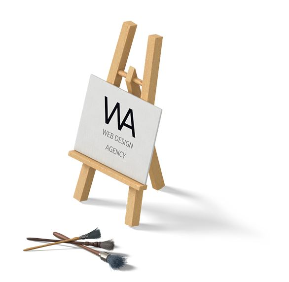
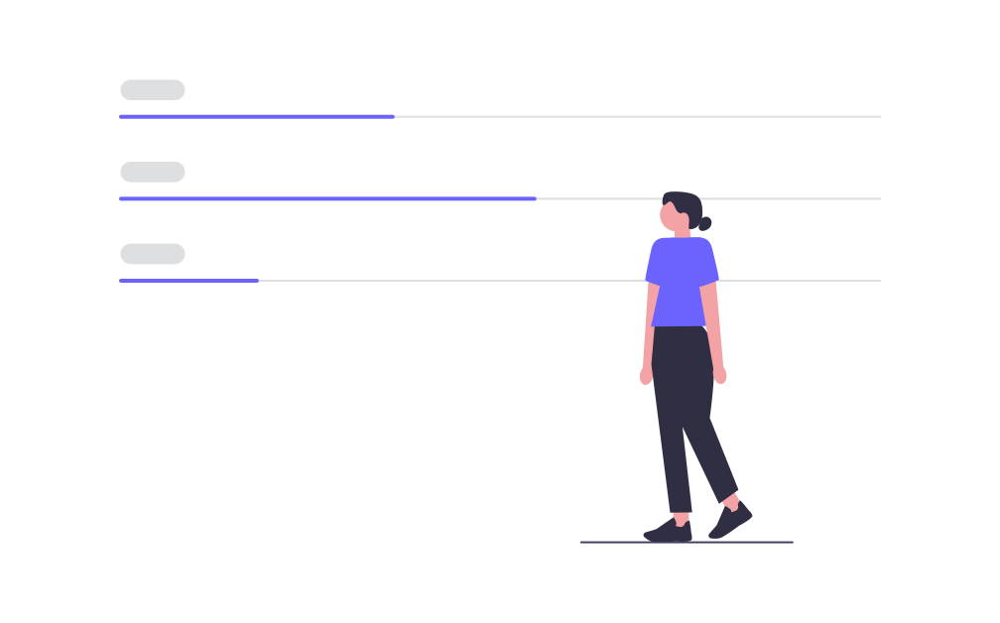

Our web design company specializes in the professional creation of unique sites.


Biggest brands in the automotive industry recommend our company as a reliable
corporate
website developer
Many years of work in this field is an excellent indicator that companies trust us and in response we offer unique solutions.
An excellent team of professionals will help you to bring all your ideas to life in the best possible way and with flexible functionality.
Individual approach to your project. flexible solutions for your tasks to achieve your goals on the path to success.